Tema 4
Seguridad, bienestar y uso responsable
Protege tus dispositivos, tus datos, tu salud y el planeta.
←→ para moverte · B buscar · P pantalla completa
Basado en el curso «Soy competente digital», de CyL Digital (Junta de Castilla y León), y en la demo del examen de tuCertiCyL. Material no oficial. Licencia CC BY-NC-SA 4.0.
Tema 4
Qué vas a estudiar

Protección de dispositivos
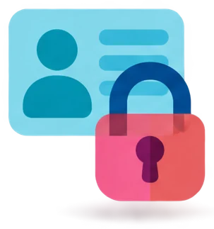
Protección de los datos personales y la privacidad
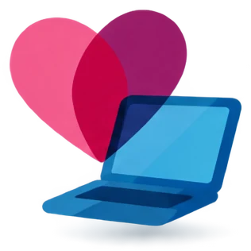
Apoyo al bienestar
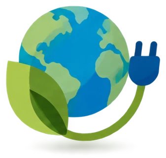
Impacto medioambiental
4.1
Protección de dispositivos
En el examen: 3 preguntas. En la demo sale una simulación: expulsar un USB.
Qué vas a saber hacer
- Reconocer los virus y otros programas maliciosos.
- Saber por dónde entran en el ordenador y en el móvil.
- Mantener el sistema y las aplicaciones actualizados.
- Analizar un USB o un disco con el antivirus.
- Crear contraseñas seguras.
- Saber qué son el PIN, el PUK y el IMEI del móvil.
- Explicar qué es la ciberseguridad y quién te ayuda.
- Proteger el desbloqueo de la pantalla del móvil.
- Expulsar un USB con seguridad.
4.1 · Protección de dispositivos
La ciberseguridad
La ciberseguridad es el conjunto de medidas que protegen tus dispositivos, tus cuentas y tus datos de ataques y de accesos sin permiso.
Ejemplos de medidas:
- Usar un antivirus.
- Instalar las actualizaciones.
- Usar contraseñas seguras.
- Hacer copias de seguridad.
Un ciberdelincuente es una persona que comete delitos por Internet.
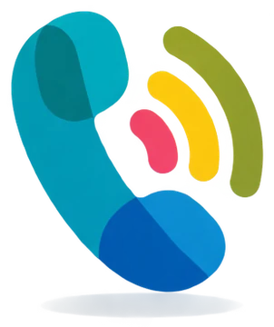
INCIBE y el 017
El INCIBE es el Instituto Nacional de Ciberseguridad. Es un organismo público. Está en León.
Su línea 017 te ayuda con problemas de seguridad en Internet. Es gratuita y confidencial.
Atiende todos los días, de 8:00 a 23:00. También por WhatsApp (900 116 117) y Telegram (@INCIBE017).
4.1 · Protección de dispositivos
Malware: los programas maliciosos
Malware es cualquier programa hecho para dañar un dispositivo o robar sus datos. Un virus es un tipo de malware.
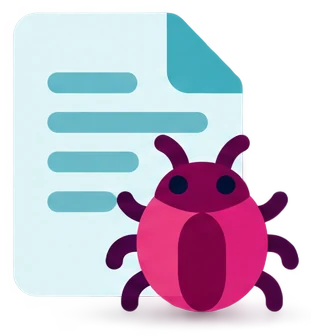
Virus
Se pega a un archivo. Se activa cuando abres ese archivo.
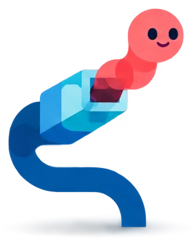
Gusano
Se copia solo de un equipo a otro por la red. Nadie tiene que abrir nada.
Troyano
Se disfraza de programa útil: un juego gratis, un «activador» de Windows o una app falsa.
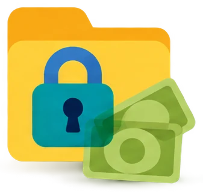
Ransomware
Cifra tus archivos y pide dinero (un rescate) para devolverlos.
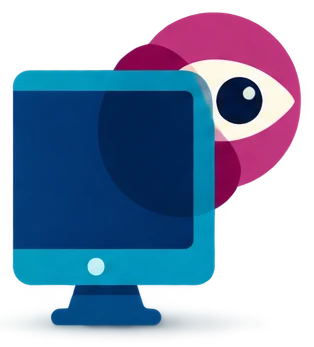
Spyware
Espía lo que haces. Un keylogger guarda las teclas que pulsas para robar contraseñas.
Adware
Llena el equipo de anuncios.
4.1 · Protección de dispositivos
Pistas para reconocer cada tipo
| Si el enunciado dice… | Es un… |
|---|---|
| «Se propaga solo por la red, sin que nadie abra nada» | Gusano |
| «Se hace pasar por un programa legítimo» | Troyano |
| «Secuestra los archivos y pide un pago» | Ransomware |
| «Guarda lo que escribes con el teclado» | Keylogger (un tipo de spyware) |
| «Se activa al abrir un archivo infectado» | Virus |
4.1 · Protección de dispositivos
Por dónde entra el malware
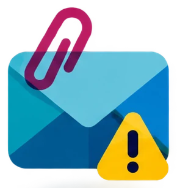
Adjuntos de correo
Ejemplo: «factura.zip» o «multa.pdf.exe».
Qué haces: no abras adjuntos que no esperas.
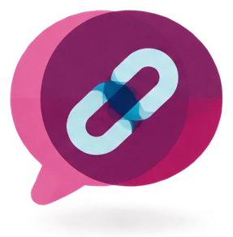
Enlaces en mensajes
Ejemplo: «Mira esta foto tuya» por SMS, WhatsApp o redes.
Qué haces: no pulses. Entra tú en la web o en la app oficial.
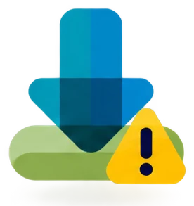
Descargas no oficiales
Ejemplo: programas pirata o apps de fuera de Google Play y App Store.
Qué haces: descarga solo de la web del fabricante o de la tienda oficial.
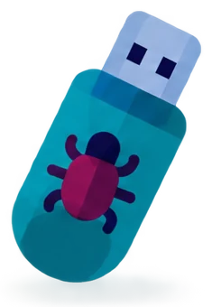
Memorias USB
Ejemplo: un USB que te deja otra persona.
Qué haces: analízalo con el antivirus antes de abrir nada.
4.1 · Protección de dispositivos
Por dónde entra el malware
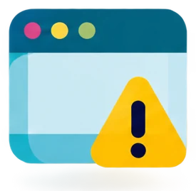
Webs falsas o infectadas
Si el navegador no está actualizado, basta con entrar en una web maliciosa.
Qué haces: actualiza el navegador. Si sale «La conexión no es privada», sal de la web.
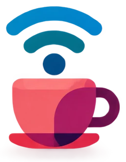
Wifi pública abierta
En una cafetería, un hotel o una estación.
Qué haces: no entres en el banco ni compres. Usa los datos móviles o una VPN. Una VPN (red privada virtual) cifra tu conexión.
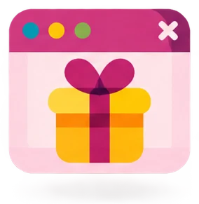
Ventanas emergentes
Ejemplo: «Has ganado un iPhone» o «Tu equipo tiene un virus».
Qué haces: cierra la pestaña.
4.1 · Protección de dispositivos
Piensa: te llega este WhatsApp
¿Qué haces?
No pulses el enlace. Es un gancho para que instales malware o escribas tu contraseña en una web falsa.
Bloquea el número y repórtalo: en el chat, toca ⋮ › Más › Bloquear o Reportar.
Si ya lo has pulsado, no instales nada ni escribas datos. Pasa el antivirus y cambia la contraseña de la cuenta que te pidió.
Si te lo envía un amigo, quizá le han robado la cuenta. Avísale por otra vía.
4.1 · Protección de dispositivos
Actualiza el sistema y las aplicaciones
Una actualización de seguridad cierra un fallo del programa (un agujero de seguridad) antes de que lo use un atacante. Cuanto antes la instalas, menos riesgo.
4.1 · Protección de dispositivos
Analiza un USB con el antivirus
Un antivirus es un programa que busca malware y lo elimina o lo aísla.
Windows trae gratis Microsoft Defender (antes se llamaba Windows Defender), dentro de la aplicación Seguridad de Windows. Android trae Google Play Protect.
PASOS EN WINDOWS 11
- Abre el Explorador de archivos.
- Haz clic derecho en la unidad USB. Por ejemplo, PEN_DRIVE (E:).
- Pulsa Mostrar más opciones.
- Pulsa Examinar con Microsoft Defender.
- Espera el resultado: «No hay amenazas actuales» o la lista de amenazas, con el botón para quitarlas.
4.1 · Protección de dispositivos
Tipos de examen y normas del antivirus
| Examen | Qué revisa |
|---|---|
| Examen rápido | Las carpetas donde suele esconderse el malware. Tarda unos minutos. |
| Examen completo | Todo el disco. Puede tardar más de una hora. |
| Examen personalizado | La carpeta o la unidad que eliges. Por ejemplo, un USB. |
| Examen sin conexión | Reinicia el equipo para quitar malware difícil. |
- Usa un solo antivirus en cada equipo. Dos a la vez se estorban.
- Mantenlo siempre actualizado y con la protección en tiempo real activada.
4.1 · Protección de dispositivos
Contraseñas seguras
- Al menos 8 caracteres. Mejor, 12 o más.
- Mezcla mayúsculas, minúsculas, números y símbolos ($, #, !).
- Sin datos tuyos: nombre, fecha de nacimiento o mascota.
- Sin palabras del diccionario ni series (1234, qwerty).
- Una distinta para cada servicio.
- No la compartas. Cámbiala si alguien la conoce.
Truco: una frase
«Mi perro come 3 veces al día y duerme 12 horas»
→ Mpc3v@d&d12h
Malas contraseñas
123456 · maria2009
qwertyuiop1234567890: es larga, pero es una serie del teclado.
4.1 · Protección de dispositivos
Gestor de contraseñas y verificación en dos pasos
Un gestor de contraseñas es un programa que guarda todas tus contraseñas cifradas. Tú solo recuerdas una.
Ejemplos: el gestor de Google en Chrome y Bitwarden.
La verificación en dos pasos (también doble factor o 2FA) pide una segunda prueba además de la contraseña.
Por ejemplo, un código por SMS o en una app del móvil, o tu huella. Si alguien roba la contraseña, le cuesta mucho más entrar. No des el código a nadie.
4.1 · Protección de dispositivos
PIN, PUK e IMEI
El PIN y el PUK protegen la tarjeta SIM. El IMEI identifica el móvil.
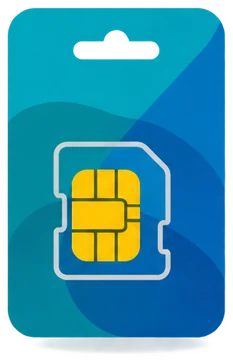
La tarjeta SIM
El PIN y el PUK vienen en la tarjeta de plástico de la SIM.
El móvil lo pide al encenderse. Puede tener de 4 a 8 números. Puedes cambiarlo en Ajustes.
Desbloquea la SIM. También te lo da tu compañía de teléfono.
Pide a tu compañía un duplicado de la SIM.

El móvil
El IMEI es el número que identifica el móvil.
Lo ves si marcas *#06# en el teclado del teléfono.
Si te roban el móvil, das el IMEI en la denuncia. La compañía puede bloquear el teléfono.
4.1 · Protección de dispositivos
Dónde ves el IMEI y qué no debes confundir
El IMEI está en tres sitios:
- Marca
*#06#en el teclado del teléfono. - En la caja del móvil, en una pegatina.
- En Ajustes › Información del teléfono y en Find Hub de Google (antes se llamaba Encontrar mi dispositivo).
Un móvil con dos tarjetas SIM tiene dos IMEI.
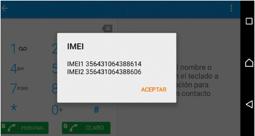
4.1 · Protección de dispositivos
Protege el desbloqueo del móvil
Si pierdes el móvil o te lo roban, nadie puede ver tus fotos ni tus chats, ni entrar en tus cuentas.
Deslizar
No protege nada.
Patrón
Se ve por encima del hombro. Se adivina por las marcas de los dedos.
PIN
4 cifras o más. Mejor, 6.
Contraseña
Letras, números y símbolos. La más segura de las que se escriben.
Huella o cara
Rápidas y cómodas. Siempre llevan un PIN o una contraseña de respaldo.
4.1 · Protección de dispositivos
Expulsa el USB con seguridad
Si quitas el USB mientras Windows escribe en él, puedes perder o estropear archivos. Al expulsarlo, Windows termina y lo deja listo.
Camino A
Haz clic derecho en la unidad USB, en el escritorio o en el Explorador.
Camino B
Abre el Explorador de archivos y busca la unidad en Este equipo.
Camino C
En la barra de tareas, pulsa la flecha ^ (Mostrar iconos ocultos) y el icono del USB.
4.1 · Así lo pregunta el examen · pregunta 13 de la demo
Simulación: expulsar el USB
Pantallas de la pregunta 13 de la demo de tuCertiCyL (Junta de Castilla y León).
4.1 · Protección de dispositivos
Comprueba lo que has aprendido
4.2
Protección de los datos personales y la privacidad
En el examen: 3 preguntas. En la demo: quién ve lo que publicas en Facebook.
Qué vas a saber hacer
- Entender qué permites cuando aceptas las condiciones de uso y las cookies.
- Saber quién puede ver y seguir tu huella digital.
- Recordar que lo que publicas dura y se reenvía.
- Conocer tus derechos a la privacidad, la intimidad y el olvido, y dónde reclamar.
- Reconocer las suplantaciones de identidad y los robos de contraseñas.
- Conocer los peligros de la cámara web.
- Dar en cada sitio solo los datos necesarios.
- Configurar la privacidad de WhatsApp.
4.2 · Datos personales y privacidad
Tus datos tienen valor
Datos personales
Los datos personales son los datos que te identifican: nombre, DNI, teléfono, dirección, foto, voz, ubicación y correo.
Condiciones de uso
Las condiciones de uso son el contrato que aceptas al registrarte en un servicio. Al aceptarlas, das permiso.
Política de privacidad
La política de privacidad explica qué datos recoge el servicio, para qué los usa y con quién los comparte.
Uso comercial de tus datos: así gana dinero una app gratuita
Usas una red social o una app gratis.
La app analiza lo que publicas, lo que te gusta, lo que buscas y dónde estás.
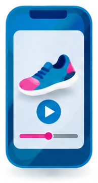
Te muestra publicidad personalizada: anuncios elegidos para ti.
Las empresas pagan a la app por esos anuncios. Así gana dinero.
4.2 · Datos personales y privacidad
Ejemplos y consejos
EJEMPLOS DEL EXAMEN
- Al subir una foto a Facebook, das a la red permiso para usarla según sus condiciones.
- Los concursos y promociones online piden tus datos para enviarte publicidad o dárselos a otras empresas.
- Los anuncios que te persiguen: miras algo una vez y te sale en todas partes.
CONSEJOS
- Antes de aceptar, mira qué datos te piden y para qué.
- Usa un correo secundario para registros y promociones.
- Si no conoces la marca, no participes en el concurso.
4.2 · Datos personales y privacidad
Cookies y anuncios que te persiguen
Ejemplo: así te sigue una cookie de terceros
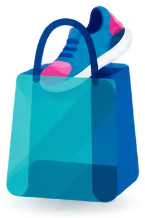
Miras unas zapatillas en una tienda online.
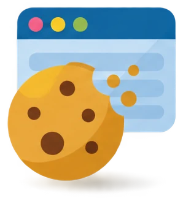
La tienda guarda en tu navegador una cookie de una empresa de publicidad.
Después ves anuncios de esas zapatillas en YouTube y en Instagram.
4.2 · Datos personales y privacidad
Tu huella digital
La huella digital es el rastro que dejas al usar Internet: lo que buscas, las webs que visitas, lo que publicas, tus «me gusta» y los sitios donde estás.
Una parte la dejas tú (publicaciones, comentarios). Otra se recoge sin que lo notes (cookies, historial, ubicación).
Quién la ve: los buscadores, las redes sociales, las empresas de publicidad, cualquier persona que mire tu perfil público… y también los ladrones. «Una semana de vacaciones en Cádiz» dice que tu casa está vacía.
4.2 · Práctica (no cuenta para el Comprueba)
Reto: ¿cuándo se hizo esta foto?
4.2 · Datos personales y privacidad
Lo que publicas se queda
Esto pasa con lo que publicas en una red o envías por WhatsApp:
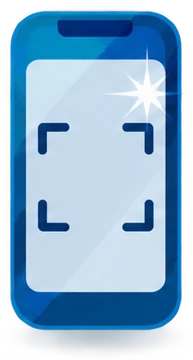
1. Se copia
Cualquiera puede hacer una captura de pantalla o grabarlo.
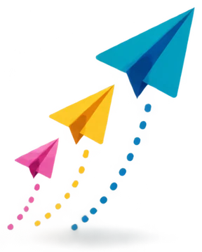
2. Se reenvía
En pocos minutos llega a personas que no conoces.
3. No desaparece
Aunque lo borres, puede quedar en capturas, en copias y en los buscadores.
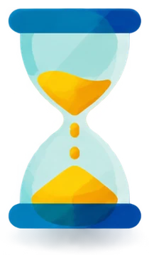
4. Dura años
Lo puede ver dentro de 10 años tu familia, un centro de estudios o una empresa.
Las fotos de «ver una vez» y los estados de 24 horas también se pueden fotografiar con otro móvil.
4.2 · Datos personales y privacidad
Tus derechos: privacidad, intimidad y olvido
La privacidad es tu derecho a decidir quién conoce tus datos y tu vida personal.
RGPD
Reglamento General de Protección de Datos de la Unión Europea. Se aplica desde 2018.
LOPDGDD
Ley española de protección de datos personales y derechos digitales (2018).
Constitución
El artículo 18 protege la intimidad y la propia imagen.
4.2 · Datos personales y privacidad
Qué puedes pedir y dónde reclamar
| Derecho | Qué puedes pedir |
|---|---|
| Acceso | Saber qué datos tuyos tiene una empresa. |
| Rectificación | Que corrijan tus datos. |
| Supresión o derecho al olvido | Que borren tus datos si ya no hacen falta o se usan sin permiso. También puedes pedir a Google que quite enlaces con tu nombre. (El manual usa el nombre antiguo: «cancelación».) |
| Oposición | Que dejen de usar tus datos, por ejemplo para publicidad. |
| Retirar el permiso | Puedes retirar tu permiso cuando quieras. |
- Primero lo pides a la empresa o a la red social.
- Si no responde, reclamas a la AEPD (Agencia Española de Protección de Datos, aepd.es).
- Urgente: si alguien difunde fotos o vídeos sexuales o violentos de una persona sin su permiso, el Canal prioritario de la AEPD pide que se retiren de inmediato.
4.2 · Datos personales y privacidad
Suplantación de identidad
Suplantar la identidad es hacerse pasar por otra persona o por una empresa. Pueden hacerse pasar por tu banco, Correos o la DGT para robarte las credenciales (usuario y contraseña). O pueden hacerse pasar por ti, con un perfil falso o entrando en tu cuenta.
| Técnica | Por dónde llega | Ejemplo |
|---|---|---|
| Phishing | Correo electrónico | «Su cuenta será bloqueada. Verifique sus datos aquí.» |
| Smishing | SMS | «Correos: su paquete está retenido. Pague 1,99 €.» |
| Vishing | Llamada de teléfono | Un falso técnico de Microsoft o del banco. Con IA pueden imitar la voz de un familiar. |
| Por WhatsApp | Mensaje | «Hola, mamá. Se me ha roto el móvil y este es mi número nuevo. ¿Me haces un bizum?» |
4.2 · Datos personales y privacidad
Detecta el engaño
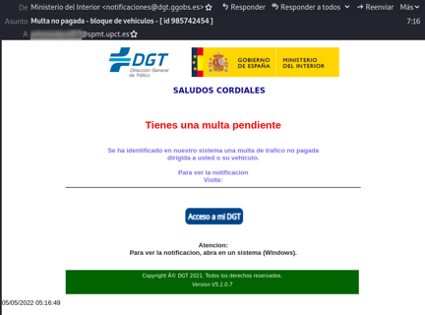
- Remitente raro: «notificaciones@dgt.ggobs.es». La web de la DGT es dgt.es. «ggobs» imita a «gob».
- Asunto que asusta: «Multa no pagada - bloqueo de vehículos».
- Un botón («Acceso a mi DGT») que descarga un archivo .zip con malware.
- Te pide abrirlo «en un sistema (Windows)».
- Faltas: «notificacion», «trafico».
4.2 · Datos personales y privacidad
Señales y qué hacer
Señales de engaño
- Prisa y amenazas.
- Premios que no esperas.
- Te piden contraseñas o el código que te llega por SMS.
- El remitente o el enlace no coinciden con la web oficial.
Ninguna empresa seria te pide la contraseña por correo, SMS o teléfono.
Si ya has caído
- Cambia la contraseña. Cámbiala también donde uses la misma.
- Activa la verificación en dos pasos.
- Llama a tu banco para bloquear la tarjeta.
- Pide ayuda al 017 y denuncia en la Policía Nacional (091) o en la Guardia Civil (062).
Si no has caído: no pulses ni descargues nada. Marca el mensaje como spam o phishing y bórralo. Si suplantan tu perfil, guarda capturas, denúncialo en la red social y avisa a tus contactos.
4.2 · Datos personales y privacidad
Peligros de la cámara web
RIESGOS
- Un troyano puede encender la cámara o el micrófono sin que te enteres.
- Una app con permiso de cámara puede usarla.
- En una videollamada se ve lo que hay detrás de ti.
- Correo falso: «Te he grabado con tu cámara. Paga o lo publico». Es un engaño masivo: no pagues ni respondas.
MEDIDAS
- Tapa la cámara del portátil cuando no la uses.
- Fíjate en la luz de la cámara. En Android, en el punto verde de la esquina.
- Revisa los permisos: Configuración › Privacidad y seguridad › Cámara (Windows 11).
- Da el permiso «Solo mientras se usa la aplicación».
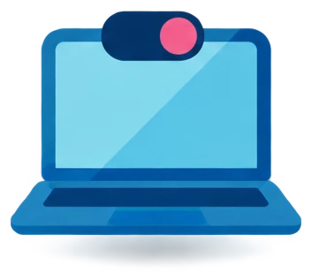
4.2 · Datos personales y privacidad
Da solo los datos necesarios
| Sitio | Qué puedes dar | Qué no |
|---|---|---|
| Redes sociales | Perfil privado, nombre o apodo, aficiones. | Dirección, teléfono, centro y horario, ubicación en directo, foto del DNI. |
| Foros y juegos online | Un nick que no sea tu nombre real. | Datos reales, fotos, quedar con desconocidos. |
| Tienda online con https y candado | Nombre, dirección de envío y pago seguro. | Datos que no hacen falta para la compra. |
| Concursos y promociones | Nada, si no conoces la marca. | DNI y datos bancarios. |
| Chats de IA (ChatGPT, Gemini, Copilot) | Preguntas sin datos personales. | Nombre, DNI, salud, datos bancarios. |
4.2 · Datos personales y privacidad
Configura la privacidad de WhatsApp
- Toca ⋮ (Más opciones), arriba a la derecha.
- Toca Ajustes.
- Toca Privacidad.
- Elige una opción y quién la ve: Todos, Mis contactos, Mis contactos, excepto... o Nadie.
En iPhone: pestaña Ajustes › Privacidad.
Al final de Privacidad está Contactos bloqueados: las personas que has bloqueado. En las versiones nuevas de WhatsApp está en Privacidad › Contactos.
4.2 · Datos personales y privacidad
Qué controla cada opción
| Opción | Qué controla | Recomendado |
|---|---|---|
| Hora de últ. vez y en línea | Cuándo te conectaste por última vez. | Mis contactos o Nadie |
| Foto del perfil | Quién ve tu foto. | Mis contactos |
| Info. | La frase que sale bajo tu nombre. | Mis contactos |
| Estados | Quién ve tus estados de 24 horas. | Mis contactos |
| Grupos | Quién puede añadirte a un grupo. | Mis contactos |
| Confirmaciones de lectura | El doble check azul. Si las quitas, tampoco ves las de los demás. | A tu elección |
| Ubicación en tiempo real | Con quién compartes dónde estás. | Con nadie, salvo si hace falta |
Además: Ajustes › Cuenta › Verificación en dos pasos. Es un PIN de 6 cifras que WhatsApp pide si alguien intenta usar tu número en otro móvil.
4.2 · Así lo pregunta el examen · pregunta 14 de la demo
Privacidad en Facebook
4.2 · Datos personales y privacidad
Comprueba lo que has aprendido
4.3
Apoyo al bienestar
En el examen: 3 preguntas. En la demo: cómo colocar las manos en el teclado.
Qué vas a saber hacer
- Usar el ordenador y el móvil con una postura correcta.
- Cuidar la vista y el oído.
- Usar el móvil con seguridad en casa, en la calle y en el coche.
- Reconocer las consecuencias de pasar muchas horas con pantallas y las señales de un uso adictivo.
- Saber qué son el ciberacoso, el grooming, el sexting y la sextorsión.
- Saber qué hacer y a quién pedir ayuda.
4.3 · Apoyo al bienestar
Siéntate bien delante del ordenador
- Pantalla a unos 50 cm, con el borde de arriba a la altura de los ojos o un poco por debajo.
- Cabeza y cuello rectos. Hombros relajados.
- Espalda apoyada en el respaldo.
- Codos, caderas y rodillas a 90°. Pies en el suelo.
- Muñecas rectas, en línea con el antebrazo.
- Portátil: súbelo con un soporte y usa teclado y ratón aparte.
- Luz: la ventana a un lado de la pantalla, no detrás ni delante.
4.3 · Apoyo al bienestar
Cuida la vista y el oído
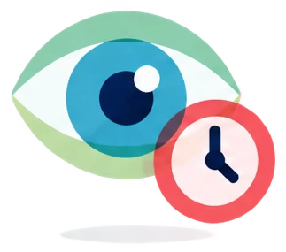
La vista
- Descansa al menos 5 minutos cada hora.
- Regla 20-20-20: cada 20 minutos, mira algo a 6 metros durante 20 segundos.
- Parpadea. Ajusta el brillo a la luz del lugar.
- Por la noche, usa el modo nocturno o el filtro de luz azul.
- Distancia: ordenador a unos 50 cm; móvil y tableta a 25-30 cm.
El oído
- Volumen moderado. Si otra persona oye tu música, está demasiado alta.
- No uses auriculares muchas horas seguidas.
- El móvil avisa cuando el volumen puede dañar el oído.
4.3 · Apoyo al bienestar
En casa, en la calle y en el coche
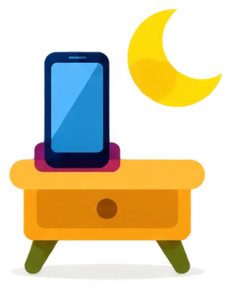
En casa
No uses el móvil en la cama antes de dormir: la luz y las notificaciones quitan el sueño. Por la noche, déjalo fuera del dormitorio o en modo avión.
Usa mesa y silla. No pongas el portátil en las piernas muchas horas.
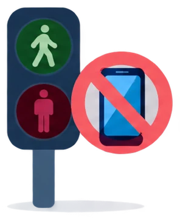
En la calle
No mires el móvil al andar ni al cruzar: no ves los coches ni las bicis.
Con auriculares, volumen bajo para oír el tráfico. Cuidado con quién mira tu pantalla en sitios públicos.
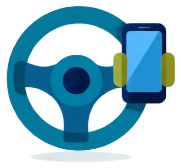
En el coche
Quien conduce no usa el móvil en la mano: ni en coche, ni en moto, bici o patinete. Es muy peligroso y la ley lo castiga con multa.
Solo manos libres o el navegador en un soporte, sin tocarlo.
Con el móvil, no dobles el cuello: súbelo a la altura de los ojos.
4.3 · Apoyo al bienestar
Muchas horas de pantalla: consecuencias
En el cuerpo
- Vista cansada: ojos secos, visión borrosa, dolor de cabeza.
- Dolor de cuello y de espalda.
- Dolor de muñeca y de mano.
- Dormir menos y peor.
- Moverse poco (sedentarismo).
En la mente y con los demás
- Estrés y ansiedad.
- Menos relación cara a cara.
- Peor rendimiento en los estudios.
- Conductas adictivas.
Qué hacer
- Haz pausas.
- Haz deporte.
- Ten horas sin pantalla: en las comidas y la hora antes de dormir.
4.3 · Apoyo al bienestar
Uso adictivo
La nomofobia es la ansiedad que sientes cuando no tienes el móvil: lo olvidas, no hay cobertura o se queda sin batería.
El FOMO (del inglés fear of missing out, miedo a perderse algo) es la necesidad de estar siempre conectado por miedo a perderte lo que hacen los demás.
El doomscrolling es pasar mucho rato leyendo noticias negativas sin poder parar.
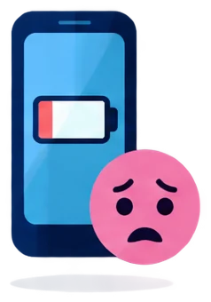
4.3 · Apoyo al bienestar
Señales y herramientas
Señales de uso problemático
- Miras el móvil nada más despertar y justo antes de dormir.
- Dejas de estudiar, dormir o quedar por estar conectado.
- Te pones nervioso si no puedes conectarte.
- Lo usas más tiempo del que querías.
Herramientas que ayudan
- Android: Ajustes › Bienestar digital y controles parentales: tiempo de uso, temporizadores de apps y modo descanso.
- iPhone: Ajustes › Tiempo de uso.
- Quita las notificaciones que no necesitas.
- Usa el modo No molestar.
4.3 · Apoyo al bienestar
Ciberacoso y grooming
Ciberacoso
El ciberacoso (o ciberbullying) es acosar a una persona de forma repetida con el móvil o Internet para hacerle daño, asustarla o humillarla.
Ejemplos: insultos y amenazas por mensaje, burlas en un grupo, difundir fotos o memes de alguien, echarle de un grupo a propósito, crear un perfil falso con su nombre.
Suele ocurrir entre compañeros. Sigue fuera del centro, también en casa.
Grooming
El grooming es cuando un adulto se gana por Internet la confianza de un menor para conseguir imágenes sexuales o un encuentro.
Cómo actúa: usa un perfil falso y dice tener tu edad; hace muchos halagos y regalos (en los juegos, monedas o skins); pide secreto; pasa a un chat privado; pide fotos y después amenaza.
4.3 · Apoyo al bienestar
Sexting y sextorsión
Sexting
El sexting es enviar fotos o vídeos sexuales de ti a otra persona, o recibir los suyos, por el móvil o Internet.
Riesgo: cuando envías una imagen, pierdes el control sobre ella. Se puede guardar, reenviar y usar para chantajear. Si alguien la difunde, la culpa es de quien la difunde.
Reenviar o publicar una imagen íntima de otra persona sin su permiso es delito, aunque te la hayan enviado a ti. Si recibes una, no la reenvíes. Bórrala y avisa a un adulto si es de un menor o se está difundiendo.
Sextorsión
La sextorsión es un chantaje: alguien amenaza con publicar imágenes sexuales tuyas si no le pagas o no le envías más.
Las imágenes pueden ser reales, montajes hechos con IA (deepfakes) o no existir: hay correos masivos que dicen «te he grabado con la cámara».
No pagues ni envíes nada. El chantaje no se acaba al pagar.
4.3 · Apoyo al bienestar
Qué hacer si te pasa
Estos pasos sirven para el ciberacoso, el grooming, el sexting y la sextorsión.
- No respondas ni sigas la conversación.
- No pagues ni envíes nada.
- Guarda pruebas: capturas de la conversación con la fecha, el nombre de usuario y los enlaces. No guardes ni reenvíes las imágenes íntimas.
- Bloquea y denuncia el perfil en la app.
- Cuéntaselo a un adulto de confianza: tu familia, tu tutor o el orientador del centro.
- Pide ayuda o denuncia (siguiente diapositiva).
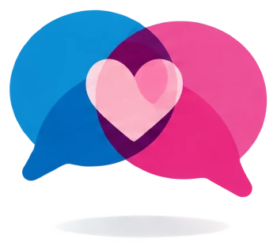
4.3 · Apoyo al bienestar
Dónde pedir ayuda
017 · INCIBE
Gratis y confidencial. De 8:00 a 23:00. WhatsApp 900 116 117 y Telegram @INCIBE017.
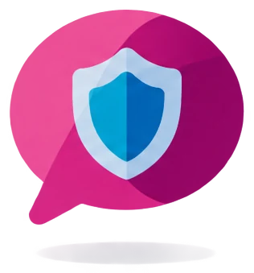
Fundación ANAR
Ayuda a niños y adolescentes. 900 20 20 10 o 116 111. Gratis, 24 horas. También chat en anar.org.
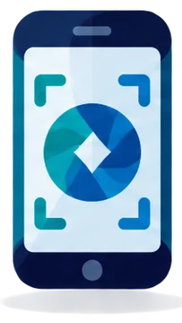
Canal prioritario de la AEPD
Para retirar fotos o vídeos sexuales o violentos difundidos sin permiso. En aepd.es/canalprioritario.
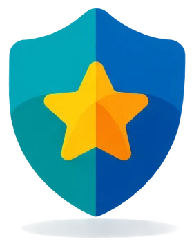
091 · 062
Policía Nacional y Guardia Civil, para denunciar. También la app AlertCops.
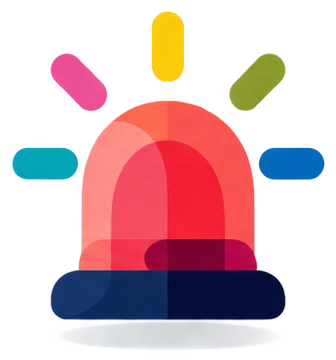
112
Emergencias.
Recuerda
Pedir ayuda es lo correcto. La culpa es siempre de quien acosa o chantajea.
También: 900 018 018, contra el acoso escolar y el ciberacoso (gratis, 24 horas). 016, contra la violencia hacia las mujeres, también por Internet.
4.3 · Así lo pregunta el examen · pregunta 15 de la demo
Las manos en el teclado
Imagen de la pregunta 15 de la demo de tuCertiCyL (Junta de Castilla y León).
4.3 · Apoyo al bienestar
Comprueba lo que has aprendido
4.4
Impacto medioambiental
En el examen: 3 preguntas. En la demo: la etiqueta energética de los ordenadores.
Qué vas a saber hacer
- Explicar cómo afectan los aparatos digitales al medio ambiente.
- Ahorrar energía con el ordenador, el móvil y la impresora.
- Saber dónde se llevan los aparatos viejos, las pilas y los tóneres.
- Reconocer la etiqueta ENERGY STAR y otras etiquetas.
4.4 · Impacto medioambiental
Las TIC también contaminan
Las TIC (tecnologías de la información y la comunicación) son los ordenadores, los móviles, Internet y los servicios que usamos con ellos.
1. Materiales
Se extraen metales escasos: litio, cobalto y coltán.
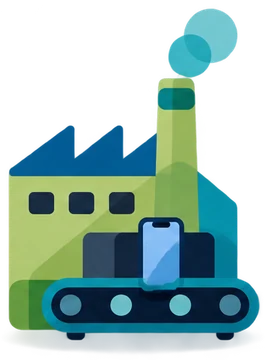
2. Fabricación
Fabricar un móvil gasta mucha energía y agua.
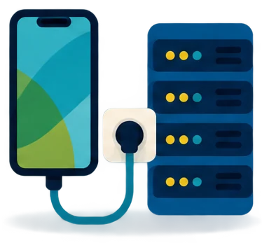
3. Uso
Los aparatos y los centros de datos gastan electricidad.
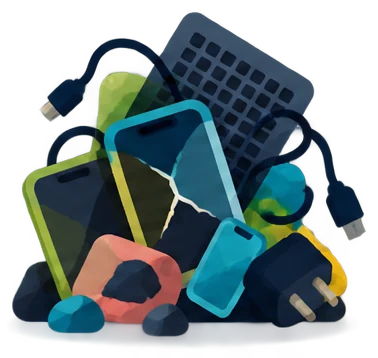
4. Residuos
Los aparatos tirados sin reciclar contaminan.
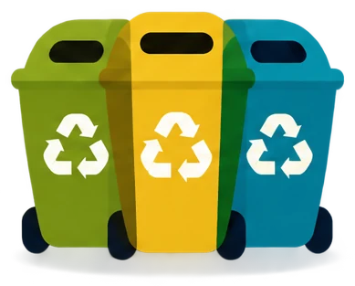
5. Reciclaje
En el punto limpio se recuperan materiales.
4.4 · Impacto medioambiental
Ahorra energía
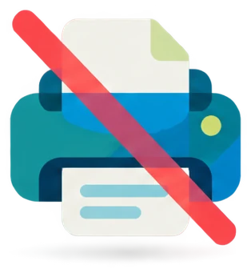
No imprimas si no hace falta
Lee en pantalla o guarda en PDF. Si imprimes, a doble cara.
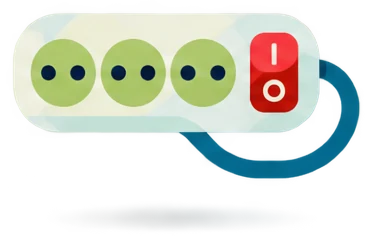
Apaga al terminar
Apaga el ordenador, la pantalla y la impresora. En reposo siguen gastando. Una regleta con interruptor ayuda.
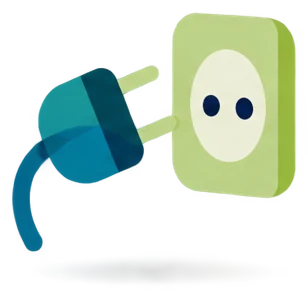
Desenchufa el cargador
Quítalo del enchufe cuando quitas el móvil.
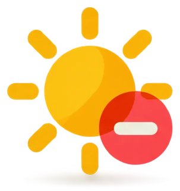
Baja el brillo
Y acorta el tiempo de bloqueo de la pantalla.
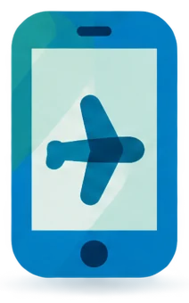
Apaga lo que no usas
Wifi, Bluetooth y GPS. Cierra apps y pestañas que no usas.
Elige el aparato justo
Una tableta gasta menos que un portátil, y un portátil menos que un ordenador de sobremesa.
4.4 · Impacto medioambiental
Recicla los aparatos
Antes de tirar: repáralo o amplíalo (más memoria RAM, un disco nuevo). Si funciona, dónalo o dáselo a otra persona.
Los RAEE (residuos de aparatos eléctricos y electrónicos) son los aparatos de pilas o de enchufe que ya no se usan.
| Qué | Dónde |
|---|---|
| Aparatos y móviles | Punto limpio. La tienda donde compras uno nuevo se queda el viejo gratis. |
| Pilas y baterías | Contenedor de pilas de tiendas y supermercados. |
| Cartuchos y tóneres | Punto limpio o recogida del vendedor. |
Antes de entregar un móvil o un ordenador: copia tus datos y bórralo todo (restablecer datos de fábrica).
Este símbolo dice que no va a la basura normal.
4.4 · Impacto medioambiental
Etiquetas que tienes que reconocer
ENERGY STAR
Equipos informáticos que gastan poca energía: ordenadores, monitores e impresoras. Es un sello de Estados Unidos.
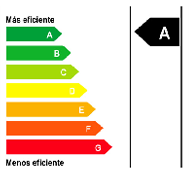
Etiqueta energética de la UE
Escala de colores de la A (verde, más eficiente) a la G (roja). Electrodomésticos, televisores y monitores.
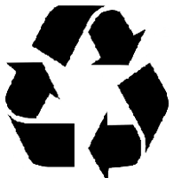
Símbolo de reciclaje
Tres flechas en círculo: el material se puede reciclar. No habla de energía.
También existen los sellos EPEAT y TCO Certified: equipos informáticos más sostenibles (consumo, materiales y reciclaje).
4.4 · Así lo pregunta el examen · pregunta 16 de la demo
La etiqueta energética
Imagen de la pregunta 16 de la demo de tuCertiCyL (Junta de Castilla y León).
4.4 · Impacto medioambiental
Comprueba lo que has aprendido
Repaso del área 4
Resumen del tema
4.1 Dispositivos
- Malware y por dónde entra.
- Actualiza y pasa el antivirus.
- Contraseñas largas, distintas y con verificación en dos pasos.
- PIN (protege la SIM), PUK (la desbloquea), IMEI (identifica el móvil, *#06#).
- Expulsa el USB antes de quitarlo.
4.2 Datos
- Al aceptar condiciones y cookies das permiso.
- Lo que publicas se queda.
- Derecho al olvido. AEPD.
- Phishing (correo), smishing (SMS), vishing (llamada).
- WhatsApp: ⋮ › Ajustes › Privacidad.
- Facebook por defecto: amigos.
4.3 Bienestar
- Espalda apoyada, 90°, muñecas rectas, pantalla a 50 cm.
- 5 minutos de descanso cada hora.
- Nunca el móvil al volante ni al cruzar.
- Nomofobia y FOMO.
- Ciberacoso, grooming, sexting, sextorsión: guarda pruebas, cuéntalo, 017, ANAR.
4.4 Medio ambiente
- Energía, residuos y materiales.
- Apaga, desenchufa, no imprimas sin necesidad.
- RAEE al punto limpio.
- ENERGY STAR.
Repaso del área 4 · preguntas del curso «Soy competente digital», CyL Digital
Test de repaso
Fin del tema 4
Seguridad, bienestar y uso responsable
4.1
Protección de dispositivos
4.2
Datos personales y privacidad
4.3
Apoyo al bienestar
4.4
Impacto medioambiental
Si te falta alguna competencia, vuelve a su Comprueba y repítelo hasta acertar las 3 preguntas.
Basado en el curso «Soy competente digital», de CyL Digital (Junta de Castilla y León), CC BY-NC. Preguntas 13 a 16 de la demo de tuCertiCyL. Curso: CC BY-NC-SA 4.0.